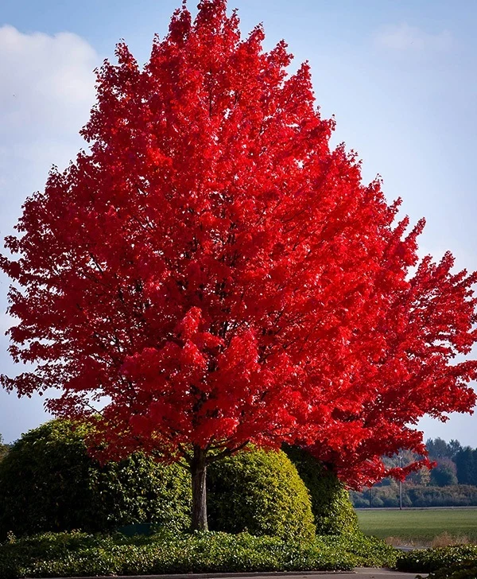

| Tree Facts | |||
|---|---|---|---|
| Species | Coconut | Magnolia | Maple |
| Taste | Sweet | Flower | Sweet |
| Wood | Timber | Hardwood | Light HW |
| Read more on Wikipedia | |||
Coconut
Maple

Magnolia

The #1 Tree Page.
|
Coconut |
Maple |
Magnolia
|
|||||||||||||||||
Facts: Maple trees are known for their distinctive leaves and colorful fall foliage., common use: Maple syrup and ornamental landscaping
Facts: Coconut palms produce coconuts that contain coconut water and edible meat., common use: Food, cooking oil, drinks, and cosmetics
Facts: Magnolia trees are known for their large, fragrant flowers., common use": Ornamental landscaping and gardens